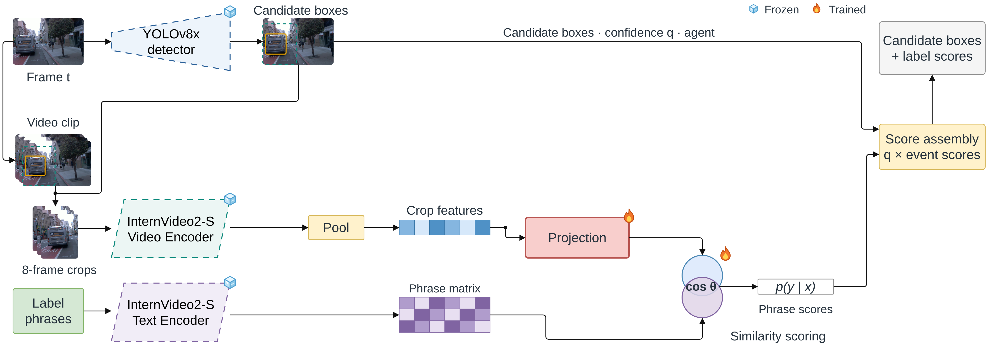
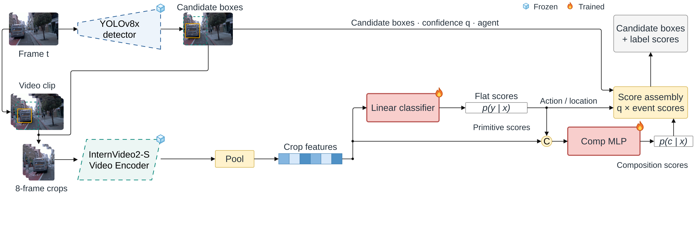
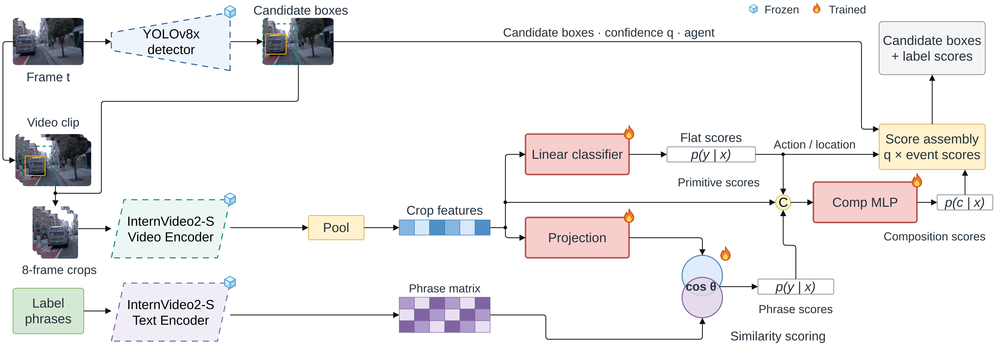
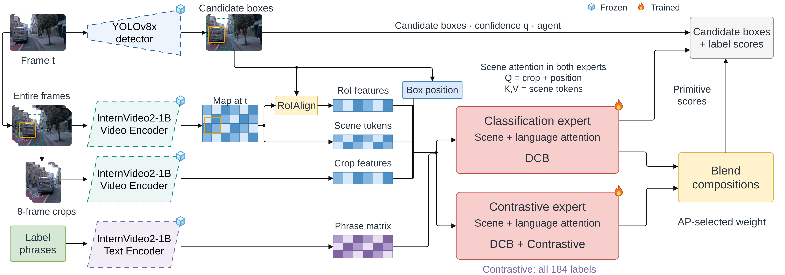
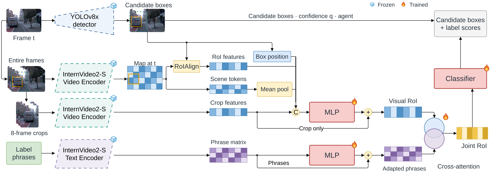
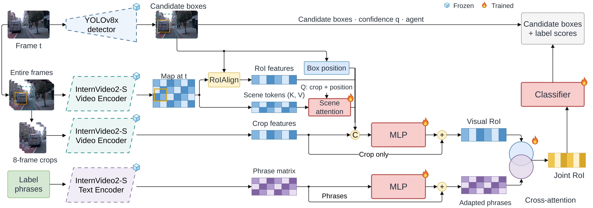
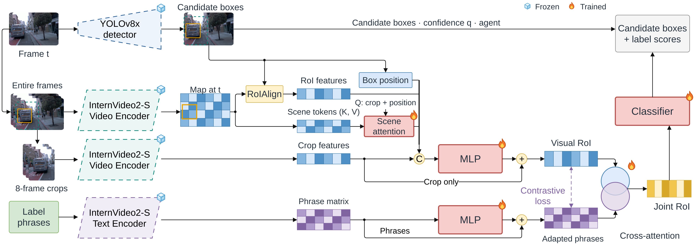

CSEB journal: architecture selection and figure placement
Meeting review packet · 28 October 2026 · Prepared from the local results workbook, verified CSEB result files, and existing editable thesis figures.
Proposed focus: how actor-specific visual context and two differently trained contextual experts support compositional road-event detection. CSEB is the final architecture. This is a thesis-derived journal revision; the separate COMP765 student and association-rule studies are outside this scope.
Status: This is a concrete selection/placement plan, not an edited or submission-ready journal manuscript. The current editable journal draft and the linked cloud workbook could not be accessed. Existing figures below are source previews; captions and journal derivatives require integration and review.
Explain actor-local scoring and the transition toward contextual modeling.
One three-panel historical comparison figure.
Mean-pooled versus attention-based contextual head
Directly test actor-conditioned scene aggregation.
Main method figure and matched ablation table.
Classification expert; contrastive expert; CSEB
Establish the final model's direct parent comparisons under the same scaled encoder.
Main architecture and headline results.
Focal/DCB, original/scaled encoder system
Explain loss and representation choices without treating them as new architecture families.
Training-method text and separate controlled/scaling results.
Gates, composition readout, language controls
Show alternatives and limits, including negative or inconclusive findings.
Compact main ablation table; full variants in supplement.
Headline evidence
ROAD-Waymo detector frame-mAP at IoU0.5 (%), three seeds, mean ± sample SD. Nine raw files were hash-verified; workbook headline cells match the verified summary.
Scaled configuration
Triplet
Tail47
Deep28
Classification expert
15.026 ± 0.208
8.396 ± 0.582
6.052 ± 0.540
Contrastive expert
15.081 ± 0.297
8.533 ± 0.628
5.992 ± 0.532
CSEB
15.748 ± 0.274
9.000 ± 0.644
6.354 ± 0.571
The observed blend improves over each expert. A same-objective ensemble control is still needed before attributing that gain uniquely to complementary training objectives. Language-control evidence does not establish that linguistic semantics alone caused the gains. Earlier stages differ in more than one factor and cannot serve as isolated component ablations.
Eight proposed main figures
Six architecture/process figure slots and two evidence figure slots. Use multiple aligned panels where they answer one question. Keep detailed historical branches in supplementary material; the number is an editorial proposal, not an IEEE requirement.
Figure 1. Road-event task, temporal input and evaluation protocol
Placement: Problem formulation / experimental setup
Why: Define agent-action-location compositions, candidate boxes, the eight-frame window, and training-derived tail groups before model comparisons.
Proposed caption: ROAD-Waymo event recognition associates a candidate box at time t with agent, action, location and valid composition labels. The CSEB visual window includes t-3 through t+4; detector evaluation uses fixed candidates and frames, while head training and checkpoint/blend selection use distinct recorded partitions.
Evidence: Locked 36,717-frame protocol; 184 outputs include agentness; Tail47 and Deep28 are derived from training counts.
Preparation: Compose a journal-sized task/protocol figure from the existing crop and frame-map ancestors; inspect annotations before choosing the example. Do not imply causal or real-time inference.
Figure 2. Why move beyond local scoring? Selected crop baselines
Placement: Baseline architectures
Why: Three aligned panels distinguish phrase scoring, visual composition and explicit phrase-score fusion without reproducing every historical experiment.
Proposed caption: Selected actor-crop baselines: (a) semantic phrase classifier; (b) crop features and primitive scores with a composition MLP; (c) additional phrase-composition evidence. These are historical architectural alternatives, not isolated single-factor comparisons with CSEB.
Evidence: Workbook models57/59/60: triplet9.065/11.226/11.275; tail5.775/6.164/6.168. Stage5 does not consume phrase-composition scores; Stage6 does.
Preparation: Reduce shared detail into one registered three-panel plate. Keep Stage0 and Stage1–3 in the baseline table and supplementary evolution figures unless the manuscript needs their full derivation.

Existing source preview: stage4. Editable draw.io source. Not a newly authored or final journal-layout figure.

Existing source preview: stage5. Editable draw.io source. Not a newly authored or final journal-layout figure.

Existing source preview: stage6. Editable draw.io source. Not a newly authored or final journal-layout figure.
Figure 3. CSEB: complete inference architecture
Placement: Proposed method, opening
Why: Give the reviewer one definitive view of the chosen model and identify what is inherited versus contributed.
Proposed caption: CSEB combines actor-crop, RoI, scene-token and geometry representations in two contextual experts. Both experts contain scene and language attention. Their135 composition probabilities are blended using a selection-set weight; classification-expert primitive scores are retained before detector assembly. Frozen video/text encoders are shared feature sources, not separately trained expert backbones.
Evidence: Scaled CSEB:15.748±0.274 triplet,9.000±0.644 Tail47,6.354±0.571 Deep28, three seeds. Visual width1408, phrase bank184×768, head width512.
Preparation: Use the approved editable CSEB ancestor. For the journal, clarify that duplicated encoder drawings denote shared weights and explain the InternVL text-checkpoint provenance in the caption/methods. Do not label its text tower as having1B parameters.

Existing source preview: cseb-scaled. Editable draw.io source. Not a newly authored or final journal-layout figure.
Figure 4. Actor-conditioned scene attention versus mean pooling
Placement: Context-fusion subsection
Why: Explain why an actor should select relevant scene context instead of receiving one indiscriminate scene average.
Proposed caption: Both contextual heads fuse crop, RoI, scene and geometry evidence. The mean-pool variant averages scene tokens; scene attention uses crop plus box position as its query and scene tokens as keys and values. Language attention follows visual fusion and is a distinct operation.
Evidence: Matched focal classification study, models88/89: triplet11.740→12.024; Tail47 5.473→6.189. Report paired seed variability before making a significance claim.
Preparation: Make a two-panel close-up retaining shared geometry. This figure tests scene aggregation; it does not establish separate crop/RoI/geometry component effects.

Existing source preview: context-mean. Editable draw.io source. Not a newly authored or final journal-layout figure.

Existing source preview: context-attention. Editable draw.io source. Not a newly authored or final journal-layout figure.
Figure 5. Expert training objectives and gradient paths
Placement: Training objectives
Why: Explain precisely how the two experts differ and why the contrastive branch is a training objective rather than another inference input.
Proposed caption: The classification expert minimizes the implemented difficulty-calibrated classification objective. The second expert adds a multi-positive auxiliary aligning pre-language visual representations with adapted text across all184 outputs, including agentness. Frozen encoders receive no head-training gradients; both experts retain scene and language attention.
Evidence: Scaled experts: triplet15.026 versus15.081; tail8.396 versus8.533; the latter alone does not establish a reliable semantic-language benefit. Lambda0.001. DCB is adapted from prior work and must be attributed.
Preparation: Derive a focused gradient/loss panel from this small-encoder ancestor, updating scaled dimensions from code. Do not present the existing small-encoder figure as an exact scaled-expert diagram. Explain the local DCB reduction/history rather than silently equating it with the published formula.

Existing source preview: context-attention-all184. Editable draw.io source. Not a newly authored or final journal-layout figure.
Figure 6. Composition blending, selection and rejected routing complexity
Placement: Expert aggregation
Why: Show why a fixed scalar blend was retained instead of a learned classwise or sample-dependent router.
Proposed caption: A fixed, selection-set-chosen alpha combines sigmoid composition scores from the two frozen experts. Primitive outputs follow the classification expert. The final semantic scores receive candidate confidence once. The inference blend is parameter-free after alpha selection and is not a sample-dependent gate.
Evidence: Scaled blend versus classification: +0.722 triplet and +0.604 Tail47; versus contrastive: +0.667 and +0.468. Small-encoder focal global/classwise/generic/factorized triplet means12.584/12.590/12.588/12.593 do not demonstrate a meaningful routing advantage.
Preparation: Use a compact scoring-and-selection diagram rather than another complete backbone drawing. Small-encoder DCB source is an ancestor, not the final scaled configuration. Keep gate negative results in an explicit comparison table.
Existing source preview: context-dcb. Editable draw.io source. Not a newly authored or final journal-layout figure.
Figure 7. What worked: controlled comparisons and frequency-stratified results
Placement: Results and ablations
Why: Connect each design decision to measured outcomes and distinguish architecture changes from encoder-system scaling.
Proposed caption: Detector frame-mAP at IoU0.5 on the locked ROAD-Waymo validation frames. Show individual seeds and mean±sample SD for matched studies; separate historical families and published external references. Tail47, Deep28 and Common39 use fixed training-derived membership.
Evidence: Include mean-versus-attention, experts-versus-blend, focal-versus-DCB, scaled-versus-original system, and per-class gains/losses. DCB improves overall triplet but decreases Tail47 in the original-encoder comparison. Scaling changes both encoder checkpoints, projection and numerical extraction conditions.
Preparation: Generate plots from raw result JSONs, not rounded spreadsheet cells. Include complete class outcomes and clearly label missing cells. No overall chronological line implying every step is a controlled causal improvement.
Figure 8. Qualitative improvements, failures and practical cost
Placement: Error analysis / discussion
Why: Show what predictions change, where the final model fails, and what the expensive encoder costs.
Proposed caption: Illustrative CSEB predictions and representative failure cases under a documented candidate/display policy. These examples support interpretation; they do not replace detector AP or establish deployment safety. Runtime includes explicitly named decoding, detection, encoding, head and export components.
Evidence: Existing raw-video demo is120frames with3,634 proposals; original measured visual encoding325.26s and both heads2.16s. That particular prototype is offline and its display threshold differs from detector AP.
Preparation: Select examples using a stated rule, include failures, and verify label/box provenance. Reuse the existing qualitative footage as a candidate, not an accuracy measurement. Keep the separate COMP765 student and market-basket study out of this thesis-derived journal scope.
Paper structure and meeting decisions
Introduction: compositional road-event problem, contribution and motivation.
Related work: detection, compositional recognition, contextual fusion, contrastive objectives and adopted loss.
Problem and protocol: label ontology, inputs, splits, detector AP, selection, training-derived tail groups.
Method: CSEB overview, context fusion, expert objectives, probability blend and score assembly.
Experiments: published/local baselines, direct scaled-expert comparisons, matched ablations and separately labeled encoder-system scaling.
Analysis: per-class outcomes, failures, language and ensemble-attribution limits, runtime.
Conclusion: supported claims and remaining limitations.
At the meeting, decide which historical crop baselines remain in the main paper, whether all six architecture/process slots are necessary after journal-size layout, and which additional controls are essential for the claims retained. Do not launch extra experiments simply to fill a diagram.
IEEE Access preparation
Use the official IEEE Access double-column, single-spaced template and produce matching editable source and PDF. The journal recommends keeping the article under20pages; longer submissions may require length reduction or justification. This supports a compact main narrative with a richer supplementary diagram archive. See the official submission guidance (checked28October2026). Confirm current author details, biographies, references and required disclosures during manuscript integration.
Draft response
DRAFT FOR BRANDON TO REVIEW — NOT SENT
Dear Dr. Moradi,
Thank you for the feedback. I will organize the journal version around the Contextual Scene-Attention Expert Blend (CSEB), with a selected set of baseline and intermediate architectures that explains why the final design was chosen.
For our next meeting, I will prepare the manuscript in IEEE Access format and place the proposed figures alongside the relevant method and results sections. The figure plan covers the selected crop-based baselines, the complete CSEB architecture, scene attention, the two expert-training objectives, and composition blending. I will pair these with controlled comparisons, tail-class analysis, and qualitative successes and failures, so that each figure explains a specific choice rather than reproducing the entire slide deck.
I will distinguish the components inherited from prior work from our contributions, and keep historical comparisons separate from matched ablations. I will also include alternatives that did not provide a clear benefit, particularly the more complex routing and composition-head variants, to explain what was retained and why. We can revise the selection and placement together at the meeting.
I understand that journal submission remains outstanding. I am committed to continuing the work after graduation, addressing reviewer concerns, and working with you on revisions and resubmissions toward publication.
Best,
Brandon